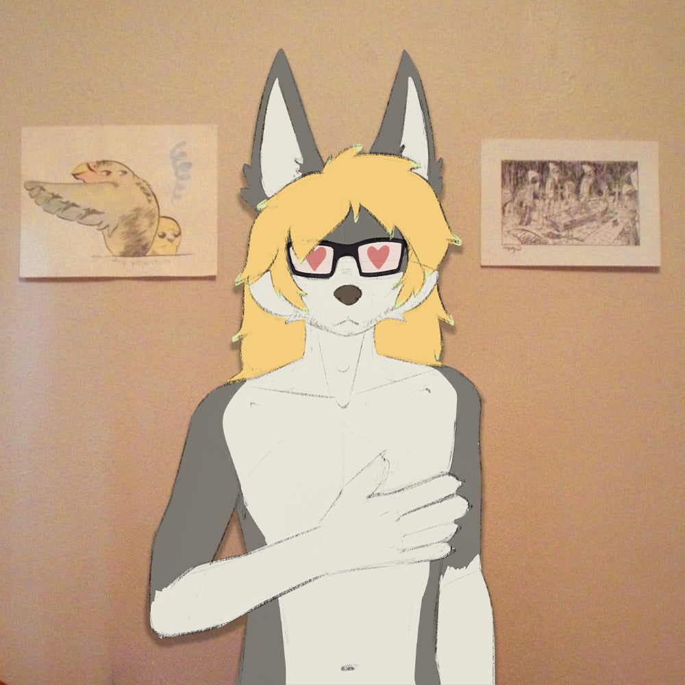

[archer]
's Sona
This character is an extension of myself, and is not a standalone character.
You are welcome to draw my sona if you would like,
just please don't be weird :)
Please do
NOT
draw my sona in the following situations:
- Gore
- NSFW
- Feral
Typical Interest and Things:
Character Itself:
Archer (me) is a dark gray and white wolf. He has very long dark blonde hair
with green tips, he has a beard and slight sideburns. He is usually always tired looking
with blue eyes and black pupils. He has an average sized white tail.
His ears are white inside and can be either up or down.
He is almost always wearing dark colored clothes.
He has a dad-bod type body shape.
If you have any other questions, dm me @archer_uwu.
(this character is based on myself irl, dont be weird pls)
Video Games:
Fallout, Borderlands, Fortnite (STW), Terraria
Music:
Indie Rock, Southern Hip-Hop, Old School Hip-Hop, Emo/Screamo
Favorite Bands/Artist:
Car Seat Headrest, My Chemical Romance, Pierce The Veil
Gorillaz, Outkast, King Gizzard, Daft Punk
and more...
By
fischerre3

By
snowyegret
By
4leafz
By
oreon_smol
COLOR GUIDE:
i am no longer using the lycanroc